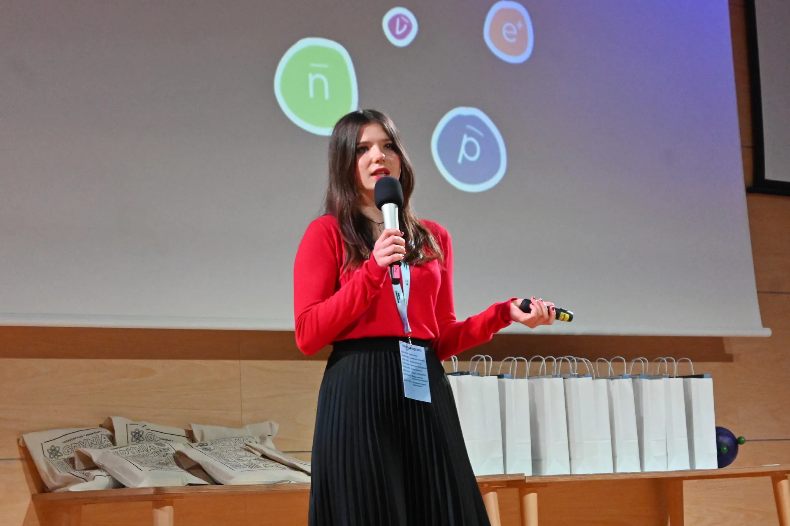
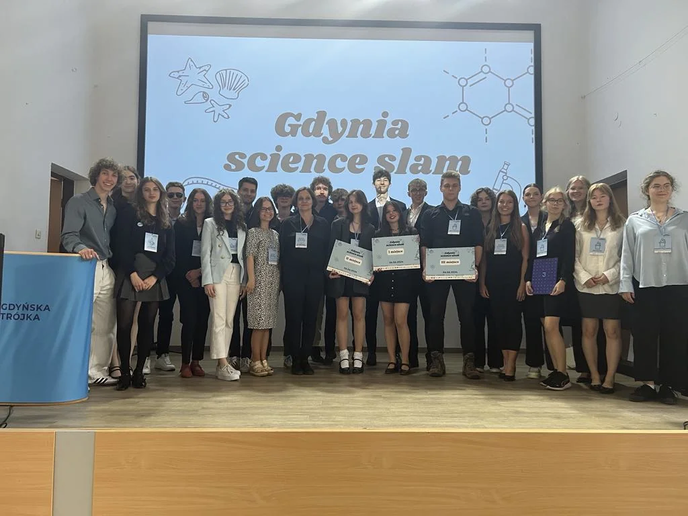
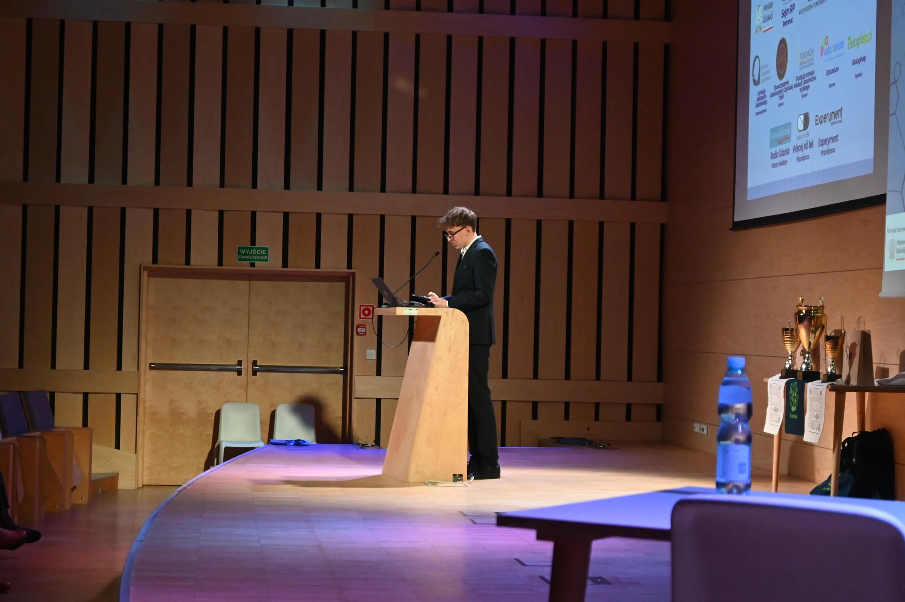
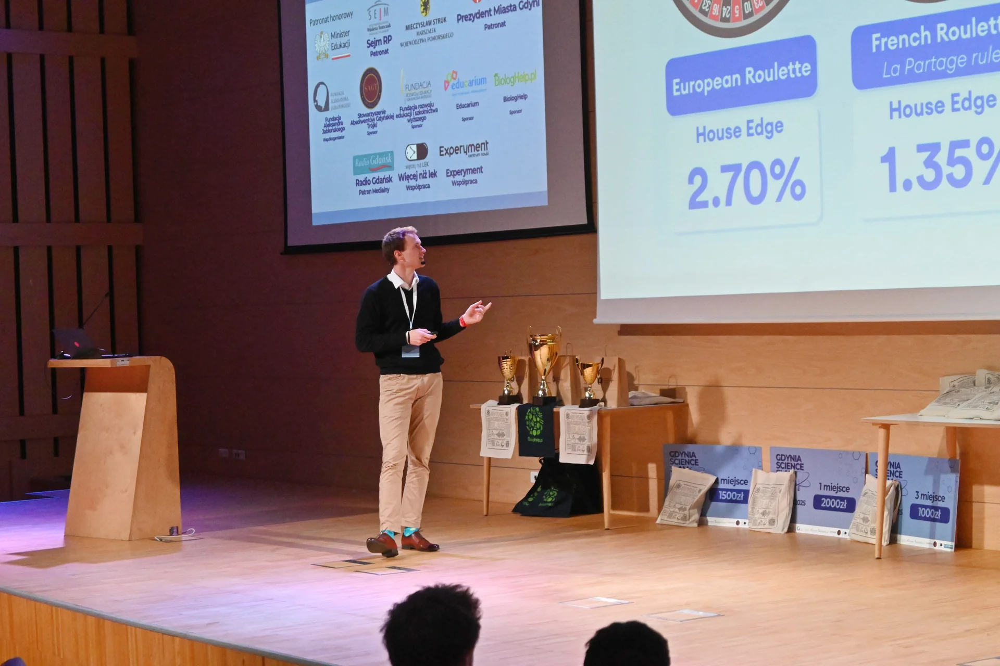

Pierwsza edycja odbyła się już dwa lata temu z inicjatywy Kornelii Wieczorek.
Gdynia Science Slam miał być odpowiedzią na trójmiejską potrzebę przestrzeni wypowiedzi dla młodych naukowców z całego regionu.
Po ogromnym sukcesie konferencji, w pełni zorganizowanej przez uczniów Gdyńskiej Trójki
jasnym stało się to, że projekt jest strzałem w dziesiątkę.
Funkcję lidera przejął Oskar Kotela dzięki któremu idea została popchnięta dalej - przeniósł projekt ze szkolnej auli do
Pomorskiego Parku Naukowo Technologicznego, oraz zwiększając nie tylko ilość prelegentów ale również jakość wystąpień nadał wydarzeniu odpowiednią miarę.
To głównie dzięki niemu możemy teraz rozwijać już trzecią edycję Gdynia Science Slam oraz kontynuować wsparcie młodych osób, nie tylko z Gdyni, nie tylko z Trójmiasta ale również z całej Polski.


Szukasz okazji, aby się wykazać?
Lubisz wyzwania?
A może szukasz miejsca w którym ktoś Cię w końcu usłyszy?
Jeśli tak, nie czekaj i wypełnij formularz zgłoszeniowy!
Będziesz mieć idealną okazje, aby dogłębnie przeanalizować interesujący Cię temat.
Poprawisz swoje umiejętności występowania przed publicznością. Nie codziennie ma się okazje wystąpić na scenie, przed dużą widownią.
Występ przed dużą publicznością dla wielu łączy sie ze stresem. Dlatego w tym roku, planujemy zorganizować warsztaty na temat radzenia sobie ze stresem dla prelegentów.
Udział w ogólnopolskiej konferencji naukowej, to bezdyskusyjnie solidny wpis do CV.
Będziesz mieć wyjątkową okazje zobaczyć, jak wygląda duża konferencja od drugiej strony.
Dla najlepszych według Jury i publiczności prelegentów przewidziane są nagrody pieniężne i rzeczowe.